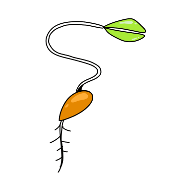
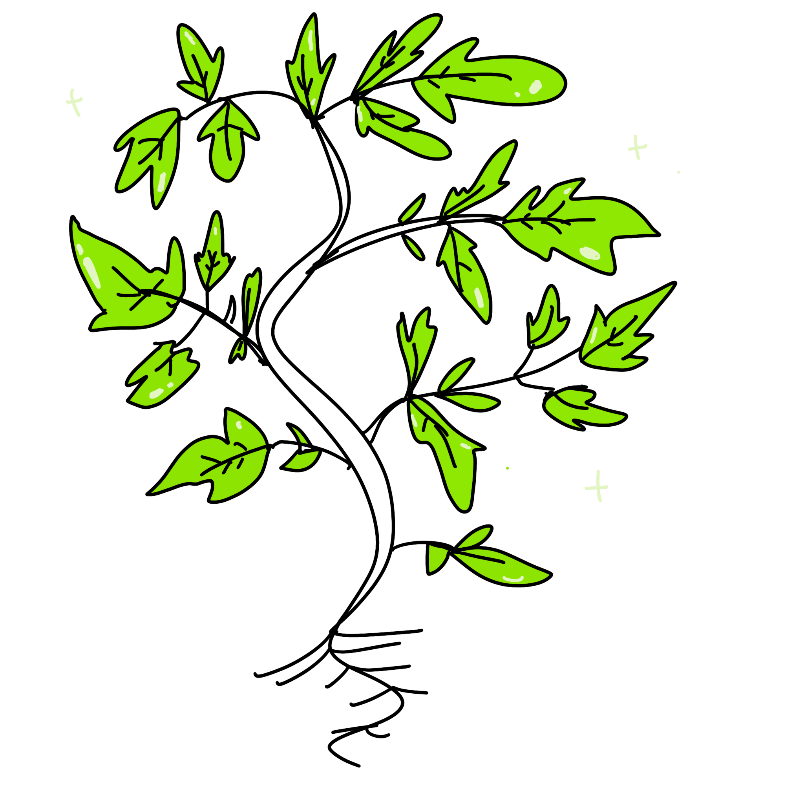
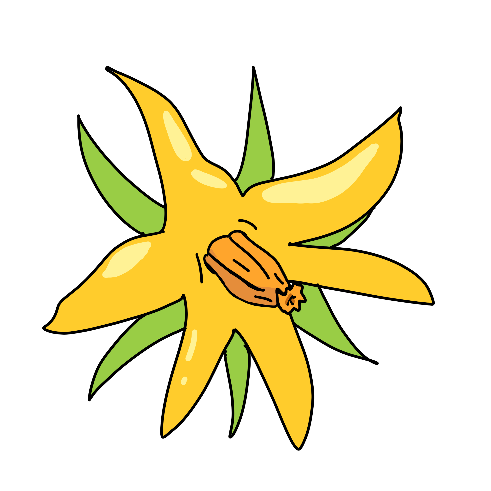
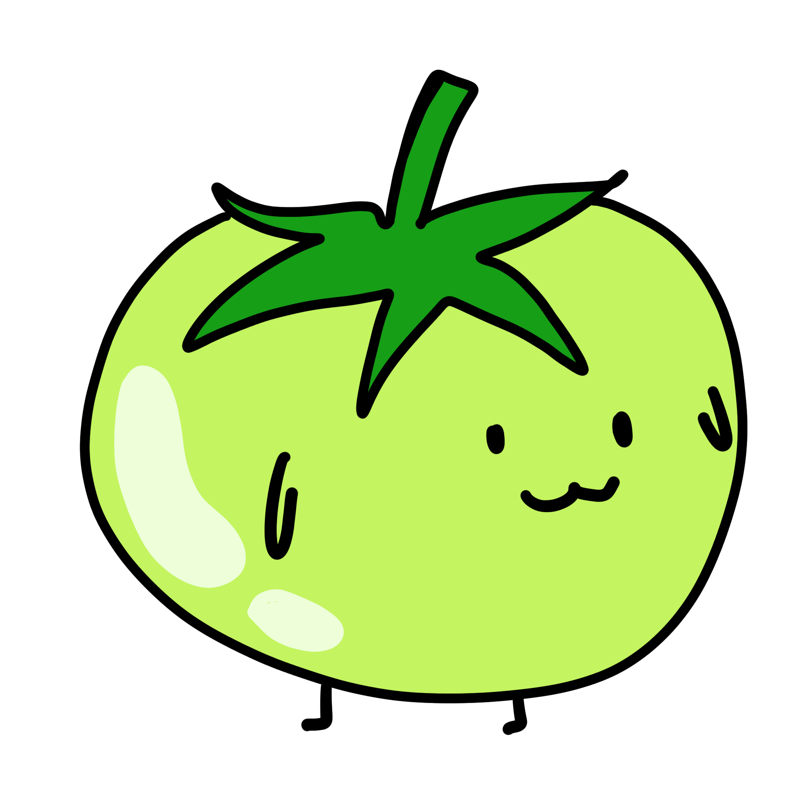

THE LIFE OF A TOMATO
Key Up/Down, or click the left menu/center image to see the story.
Try clicking/tapping the play button!
Sprout
Finally, the seed baby sprouted.
Young Plant

Your tomato plants love sunny weather:)
Mature Plant
Wow It's now 14 inch tall, time to prune!
Flower
Thank you bumblebee!
Green Tomato
Wait a bit! I'm unripen.
Thank you for reading! I would also recommend that you watch
The life of a tomato by Liziqi on Youtube.
She grew the tomato plant from seeds and turned them into delicious
dishes!
Enjoy watching!
If you want to start over just continue scrolling☺️ It's a life cycle.
2022 Jialin Ye, Made for PUI Final, All rights reserved.